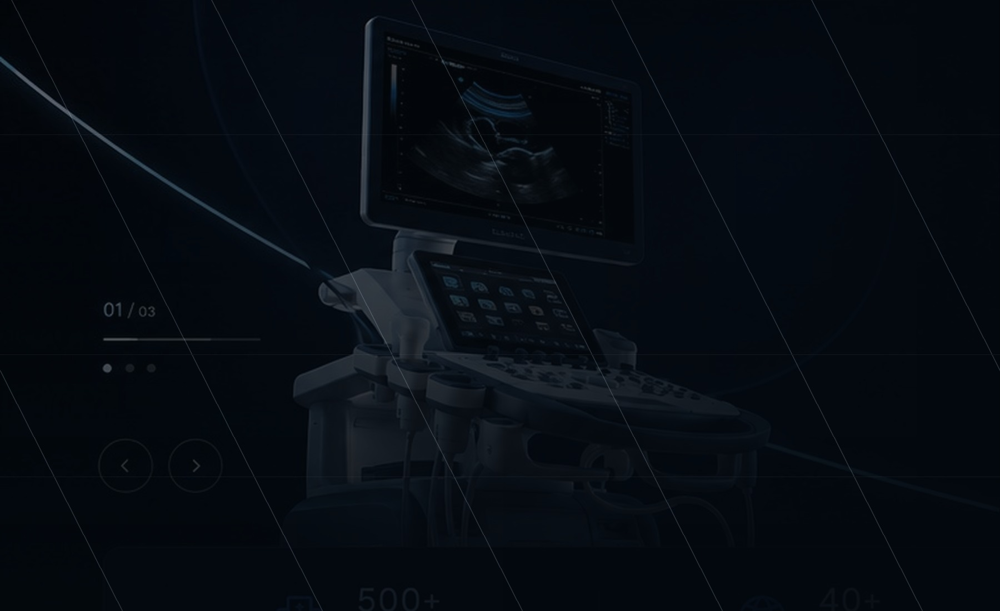

SERVICE ARCHITECTURE
خدمات شرکت
مشاوره انتخاب تجهیز، نصب و راهاندازی، آموزش، نگهداری، قطعات و اسناد؛ هرکدام با صفحه اختصاصی.
خدمات بخشی از ارزش اصلی برند هستند و نباید در یک پاراگراف کوتاه خلاصه شوند.

ALL SERVICES
خدمات ساختارمند
برای هر خدمت، دامنه کار، فرآیند و خروجیهای احتمالی بهصورت مستقل توضیح داده شده است.
WHY IT MATTERS
خدمت خوب، تصمیم و بهرهبرداری را بهتر میکند
معرفی محصول زمانی کامل میشود که کاربر از الزامات نصب، آموزش، نگهداری و اسناد نیز تصویر روشنی داشته باشد.
- کاهش ابهام پیش از تصمیم
- آمادگی بهتر برای نصب و شروع کار
- پشتیبانی اطلاعاتی در طول بهرهبرداری